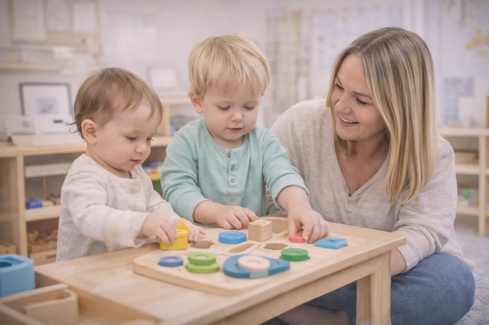

Бебешки център
SI BEBE – Център за ранна грижа и развитие (0–36 месеца)
Мислим за емоциите, развитието и спокойствието на всяко дете.
Ние сме тясно специализиран бебешки център за почасово гледане на бебета и деца от 0 до 36 месеца.
В SI BEBE осигуряваме среда, която поставя основите на здравословното развитие и емоционалната стабилност. Избираме ниската сензорна стимулация и високата емоционална наличност, за да изградим здрава нервна система и вътрешна увереност у всяко дете.

Експертност и спокойствие
SI BEBE не е просто място за гледане на деца. Вярваме, че ранното детство изисква баланс между професионална подкрепа и домашна предвидимост. Взаимстваме стандарти от водещи международни практики, където фокусът е изместен от „забавлението“ към „преживяването“.
-
Малки групи
Гарантираме качествена връзка между детето и възрастния.
-
Постоянен екип
Сигурността на детето зависи от познатите лица. При нас стабилността на екипа е приоритет.
-
Минимализъм
Пространството ни е проектирано с естествени материали и меки тонове. Премахваме визуалния хаос, за да стимулираме естественото внимание без стрес.
Четирите стълба на SI BEBE
Биологичен ритъм, не график
Поетапно въвеждаме дейностите и разписанието на активностите на центъра. Адаптираме деня спрямо индивидуалните нужди на всяко дете от сън, храна и близост. Когато биологичният ритъм се уважава, нервната система остава спокойна.
Емоционална интелигентност
Отнасяме се към бебето като към личност с право на глас и собствено темпо. Изграждаме доверие, което е основа за бъдещата му увереност.
Двигателна и сетивна свобода
Насърчаваме детето да открива света чрез движение и сетивни игри – от първото обръщане до увереното ходене.
Партньорство и прозрачност
Ние сме вашата подкрепа. Споделяме реалните етапи от развитието на детето ви, за да тръгвате на работа и вършите вашите задачи със спокойствие.
Какво правим
Посоки на развитие
-
Сетива
Работа с естествени материали, светлина и музика.
-
Двигателни умения
Подкрепа на грубата и фината моторика в защитена среда.
-
Езиково обогатяване
Четене, приказки и постоянна комуникация лице в лице.
-
Социална интелигентност
Първи стъпки в общуването с връстници.
Дейност
Ние вярваме в ученето чрез преживяване. Нашите активности включват:
-
Сензорни игри
Изследване на текстури (пясък, вода, багрила и др.), които развиват невронните връзки.
-
Музикални занимания
Ритъм, песни и първи срещи с инструментите.
-
Гимнастика за бебета
Укрепване на мускулатурата и координацията чрез забавни упражнения.
-
Арт ателиета
Първи стъпки в творчеството с безопасни материали.
Услуги
Гледане на дете
Почасово (за вашето свободно време), полудневно и целодневно (с включени занимания).
Абонаментни програми
Гъвкави пакети за редовни посещения на преференциални цени.
Тематични работилници
Уикенд събития за цялото семейство.
Мама и бебе
Специални класове за заздравяване на връзката и споделен опит.
Бебешки рожден ден
Организираме първите празници с внимание към детайла и нуждите на малките.
Консултации
Индивидуални срещи с логопед или детски психолог.
Възрастови групи
Програмите ни са адаптирани към специфичните нужди на всяка възраст:
0–6 месеца
Нежни стимули, масаж и визуално проследяване.
6–12 месеца
Пълзене, седене и опознаване на предмети.
12–24 месеца
Първи стъпки, прохождане и езиково развитие.
24–36 месеца
Социални игри и подготовка за детска градина.

Адаптация
Преход без стрес
При нас преходът не е по часовник, а по готовност. Предлагаме специализирани „преходни часове“ с присъствие на родителя, докато детето изгради доверие към екипа и новата среда. Така процесът на отделяне протича естествено, без стрес и при пълен емоционален комфорт.
-
Постепенност
Престоят се увеличава стъпка по стъпка.
-
Присъствие
Родителят е част от процеса в началото, докато се изгради връзка на доверие с екипа.
-
Индивидуален план
Няма натиск и прибързване. Изчакваме детето да ни покаже, че се чувства сигурно.
Среда и хигиена
Безопасност и стандарти
Сигурността е наш приоритет.
-
Хигиена
Осигуряваме безкомпромисна чистота и здравословен микроклимат чрез висок клас дезинфекция и системи за пречистване на въздуха.
-
Здраве
Ежедневен медицински филтър; хипоалергенна среда
-
Материална база
Всеки детайл в интериора и играчките е подбран с мисъл за сетивното здраве, ергономията и безопасността на децата.
-
Регламенти
Центърът е проектиран и оперира в пълно съответствие с всички нормативни изисквания и разпоредби на българското законодателство.
-
Видеонаблюдение
Центърът е с контролиран пропускателен режим и е оборудван с камери във всяко помещение.
Дневен режим
Пример за нашия ден
- 08:00 – 09:30Прием, гимнастика, йога, свободни игри
- 09:30 – 10:30Специализирано занимание (музика/сензорика/арт занимания/ролеви игри и други)
- 10:30 – 11:00Здравословна закуска
- 11:00 – 12:30Игри на открито или гимнастика
- 13:00 – 15:30Време за почивка
- 15:30 – 16:30Свободни дейности
- 16:30 – 17:30Специализирано занимание (музика/сензорика/спорт/театър)
- 17:30 – 18:30Свободни игри